Number System
Exercise 1.1
1. (i) 90 (ii) \(-95\) (iii) \(-104\) (iv) 22 (v) 140 (vi) \(-100\) (vii) 50 (viii) \(-171\) (ix) \(-3\) (x) \(15, -42, -23\)
2. (i) False (ii) False (iii) True
3. (i) \(-4\) (ii) \(-8\) (iii) \(-110\) (iv) \(-52\) (v) 7 (vi) \(-63\) (vii) \(-288\)
4. \(-38\) 5. Team A \(=\) Team B (yes, it can be added in any order)
6. Both are equal. Associative property under Addition
7. \(0+2,\ 1+1=2,\ -1+3,\ -2+4,\ -3+5\) (any pair)
Objective type questions
8. (iv) 10 pm 9. (i) \(-9+(-5)+6\) 10. (ii) \(-3\) 11. (iii) 0 12. (i) 20
Exercise 1.2
1. (i) \(-44\) (ii) 30 (iii) \(-30\)
2. (i) False (ii) True (iii) False
3. (i) 1 (ii) 17 (iii) 99 (iv) \(-300\)
4. 3 5. 5th floor (above the ground floor) 6. \(100 ^{\circ}\)F
7. \(-2\) 8. Wrong, \(-35\) (correct answer)
Objective type questions
9. (iii) 13 10. (ii) 0
Exercise 1.3
1. (i) 1 (ii) \(-2\) (iii) \(-5\) (iv) 5 (v) 0
2. (i) False (ii) True (iii) False 3. (i) '\(+\)' (ii) '\(-\)'
4. (i) \(-770\) (ii) 1080 (iii) 3024 (iv) 0 (v) 10,000
5. (i) Not equal (ii) Not equal (iii) Equal ; distributive property of multiplication over addition
6. Decrease of 12 inches
7. \((-5\times 10), (-10\times 5), (2\times -25), (-2)\times 25,\ , (-1)\times 50, (-50)\times 1\)
Objective type questions
8. (iv) \((-6)\times(+5)\) 9. (iii) distributive 10. (iv) \(-11\) 11. (i) 108
Exercise 1.4
1. (i) \(-1\) (ii) \(-5\) (iii) \(-36\) (iv) 1
2. (i) False (ii) False
3. (i) \(-15\) (ii) 5 (iii) \(-5\) (iv) \(-1\)
4. 9 5. dropped \(3 ^{\circ}\)c per hour 6. 53 seconds
7. 160 calories lost per day
8. 168 9. 5 10. \(-40\)
Objective type questions
11. (iv) \(12 \div 5\) 12. (iii) \(16 \div (-4)\) 13. (ii) \(-20\) 14. (iv) division
Exercise 1.5
1. \(14 ^{\circ}\)c 2. (i) \(-2\) (ii) 0 (iii) \(-3\) (iv) \(-4\) (v) 1
3. (i) \(-2 ^{\circ}\)k (ii) \(318 ^{\circ}\)k (iii) \(-127 ^{\circ}\)k (iv) \(0 ^{\circ}\)k
4. (i) ₹1175 (ii) ₹675 (iii) ₹325 (iv) ₹414 (v) ₹114
5. (i) 7 days (ii) 15,750 characters (iii) ₹8750 (iv) 5 days (v) ₹3,500
6. 12 7. Loss of ₹10
8. decrease of 18 inches 9. yes; 80 years
Exercise 1.6
1. 11 2. \(-40\) 3. \(-1,81,805\) 4. \(-445\) 5. \(-17,999\)
6. 31,500 7. \(-9\) 8. \((-3,-5), (3,5)\)
9. (i) Equal (ii) Not equal (iii) Not equal (iv) Equal
10. ₹ 6,800 11. The item \(x\) will be costlier is 2020
12. Match the following
1. d, 2. a, 3. e, 4. c, 5. b
Challenge Problem
13. (i) False (ii) False (iii) True (iv) True (v) False
14. \(-21\) 15. \(-5\)
16. \((-1)+1+(-2)+2+(-3)+3+(-4)+4+(-5)+5=0\)
(The answer is not unique. You can take any single digit with its Additive inverse)
17. 2 18. (i) \(-4\) (ii) \(-11\) 19. 3000 litres of water
20. 5 jumps 21. ₹ 24 22. 850 feet below the sea level
23. \(x = 0,\ y = -4,\ z = -7\)
Measurement
Exercise 2.1
1. (i) area \(= 33\) sq.cm perimeter \(= 30\) cm (ii) area \(= 70\) sq.cm perimeter \(= 40\) cm
2. (i) 90 sq.cm (ii) 7 m (iii) 13 mm 3. 35 cm 4. 54 sq.cm 5. ₹ 4620/-
Objective type questions
6. (iv) 22 cm 7. (i) 70 sq.cm 8. (iii) 13 cm
9. (ii) Remains the same 10. (ii) 192 sq.cm
Exercise 2.2
1. (i) 64 sq.cm (ii) 165 sq.cm 2. 126 sq.cm
3. (i) 152 sq.cm (ii) 36 m (iii) 30 mm 4. 25 cm 5. ₹ 280
Objective type questions
6. (iii) 12 sq.cm 7. (ii) 32 sq.cm 8. (ii) 8 cm 9. (iv) 4 m 10. (iii) \(90 ^{\circ}\)
Exercise 2.3
1. (i) 160 sq.m (ii) 24 cm (iii) 18 m (iv) 30 cm
2. 330 sq.cm 3. 38 cm 4. 24 cm 5. 23 cm and 17 cm
6. ₹ 870 7. ₹ 697.50
Objective type questions
8. (i) 45 sq.cm 9. (iv) 28 cm 10. (iii) isosceles trapezium
Exercise 2.4
1. 144 sq.cm 2. 11 hm 3. 128 m 4. \(h = 13\) cm \(b = 52\) cm
5. \(d_{1} = 48\) cm \(d_{2} = 24\) cm 6. ₹ 1,57,950
Challenge Problems
7. 45 cm; 25 cm 8. 4725 sq.cm 9. 192 sq.cm 10. \(DF = 30\) cm \(BE = 42\) cm
11. 54 sq.cm 12. 169 sq.cm; ₹ 2535
13. 12 cm 14. ₹ 5250 15. 324 sq.m
ALGEBRA
EXERCISE-3.1
1. (i) \(x\) (ii) \(-6\) (iii) unlike (iv) three (v) \(-1\)
2. (i) True (ii) False (iii) True (iv) False 3. \(-3, 12,\ 1, 121,\ -1, 9, 2\).
4.
| S.No. | Expression | Variable | Constant | Terms |
|---|---|---|---|---|
| (i) | \(18+x-y\) | \(x, y\) | 18 | \(18,\ x,\ -y\) |
| (ii) | \(7p-4q+5\) | \(p, q\) | 5 | \(7p, -4q,\ 5\) |
| (iii) | \(29x+13y\) | \(x, y\) | 0 | \(29x, 13y\) |
| (iv) | \(b+2\) | \(b\) | 2 | \(b,\ 2\) |
5.
| \(x-\text{terms}\) | \(y-\text{terms}\) | \(z-\text{terms}\) |
|---|---|---|
| \(7x, -8x, -12x\) | \(5y, 12y, -9y\) | \(6z,\ z, 11z\) |
6. (i) \(-5\) (ii) 5 (iii) 10 (iv) 0
Objective type questions
7. (i) \(3(x+y)\) 8. (ii) \(-7\) 9. (iv) \(-4x, 7x\) 10. (ii) 13
EXERCISE-3.2
1. (i) \(-5b\) (ii) \(-8m\) (iii) \(37xyz\)
2. (i) False (ii) False (iii) True
3. (i) \(11x\) (ii) \(12mn\) (iii) \(4y\)
4. (i) \(8k\) (ii) \(10q\) (iii) \(10xyz\)
5. (i) \(28p + 6q\) (ii) \(3a + 15b + 16c\) (iii) \(6mn - 4t\) (iv) \(6u\) (v) \(8xyz - 8xy\)
6. (i) \(14x - 7y - 38\) (ii) \(-2p - 2q + 2\) (iii) \(2m - 8n\) (iv) \(-7y + 5z\)
7. (i) \(-10x - 11y + 12z\) (ii) \(2p + 6\) (iii) \(3m + 3n + 15\)
Objective type questions
8. (iii) \(2mn\) 9. (iii) \(-2a\) 10. (i) Like terms
EXERCISE-3.3
1. (i) equation (ii) 15 (iii) \(6x\)
2. (i) False (ii) True (iii) True
3. (i) \(x = 3\) (ii) \(p = 10\) (iii) \(x = 15\) (iv) \(m = 30\) (v) \(x = 10\)
4. \(2x+2y\) 5. \(x = 12\) 6. 99 and 101 7. \(x = 45\) km
Objective type questions
8. (iii) \(3n\) 9. (i) 2 10. (ii) \(-1\)
EXERCISE-3.4
1. \(6ab + 16;\ -6ab - 16\) 2. \(4x + 3y\) 3. \(x = 13\) 4. \(3ab - 7b + 3c\) 5. \(x = 8\)
Challenge Problems
6. \(12x + 6y - 18\) 7. \(-4a - b - 4c\) 8. \(5m + n - 6\) 9. \(lb - 2(l + b) = 20\)
10. \(3a + \frac{4}{3}b + \frac{17}{5}c\)
Direct and Inverse Proportion
Exercise 4.1
1. (i) ₹ 84 (ii) 21 kg. (iii) 10 litres (iv) ₹ 210 (v) 360
2. (i) True (ii) True (iii) False (iv) True (v) False
3. ₹ 80 4. 42 5. 180 6. 40 m 7. 1107
8. ₹ 250 9. 5 kg. 10. ₹ 30,000 11. Kamala 12. 5 litres
Objective Type Questions
13. (iii) ₹ 360 14. (ii) 7 15. (iv) 147 16. (ii) 10 17. (i) 9
Exercise 4.2
1. (i) 32 (ii) 80 2. 1 hour 48 minutes
3. 36 days 4. 20 days 5. 15 days 6. 100 gm
7. 18 8. 4 km/hr 9. 24
Objective Type Questions
10. (iii) 6 11. (ii) 8
Exercise 4.3
1. (i) 15 kg. (ii) ₹ 36 2. (i) Direct proportion (ii) \(k = 5\) (iii) \(C = 50\)
3. 90 months 4. 12 minutes 5. ₹ 140 6. 3 7. 300 litres 8. 10 days
Challenge Problems
9. ₹ 1155 10. 35 minutes 11. 81 12. 6 days 13. 10 days 14. 5 days
GEOMETRY
Exercise 5.1
1. The pairs of adjacent angle are \(\angle ABG\) and \(\angle GBC\), \(\angle BCF\) and \(\angle FCE\), \(\angle FCE\) and \(\angle ECD\), \(\angle ACF\) and \(\angle FCE\), \(\angle ACF\) and \(\angle FCD\).
2. \(65 ^{\circ}\) 3. \(86 ^{\circ}\) 4. (i) \(108 ^{\circ}\) (ii) \(46 ^{\circ}\) (iii) \(30 ^{\circ}\)
5. The other angle is also a right angle. 6. \(30 ^{\circ}, 120 ^{\circ}, 210 ^{\circ}\) 7. \(63 ^{\circ}\)
8. Adjacent angles: \(\angle PQU\) and \(\angle PQT\), \(\angle PQT\) and \(\angle TQS\), \(\angle TQS\) and \(\angle SQR\), \(\angle SQR\) and \(\angle RQU\), \(\angle RQU\) and \(\angle PQU\) (all possible answers).
Vertically opposite angles: \(\angle PQU\) and \(\angle TQR\), \(\angle PQT\) and \(\angle UQR\).
9. \(120 ^{\circ}\) 10. \(105 ^{\circ}\) 11. \(45 ^{\circ}, 135 ^{\circ}\) 12. (i) \(125 ^{\circ}\) (ii) \(55 ^{\circ}\)
Objective type questions
13. (iii) one common arm, one common vertex, no common interior
14. (iii) linear pair 15. (iv) equal in measure
16. (i) \(360 ^{\circ}\) 17. (ii) \(80 ^{\circ}\)
Exercise 5.2
1.
- The angles are exterior angles on the same side of the transversal
- The angles are alternate exterior angles
- The angles are corresponding angles
- The angles are interior angles on the same side of the transversal
- The angles are alternate interior angles
- The angles are corresponding angles
2. (i) \(35 ^{\circ}\) (ii) \(65 ^{\circ}\) (iii) \(145 ^{\circ}\) (iv) \(135 ^{\circ}\) (v) \(90 ^{\circ}\)
3. (i) \(28 ^{\circ}\) (ii) \(58 ^{\circ}\) (iii) \(123 ^{\circ}\) (iv) \(108 ^{\circ}\)
4. (i) \(149 ^{\circ}\) (ii) \(45 ^{\circ}\) (iii) \(101 ^{\circ}\) (iv) \(158 ^{\circ}\)
5. (i) \(42 ^{\circ}\) (ii) \(8 ^{\circ}\) (iii) \(2 ^{\circ}\) (iv) \(15 ^{\circ}\)
6. (i) \(55 ^{\circ}\) (ii) \(35 ^{\circ}\)
7. (i) No. Since, interior angles on the same side of the transversal are supplementary.
(ii) No. Since Corresponding angles are equal.
9. Minimum number of angles is 1. Using the concept of linear pair of angles, we can find one more angle and by the concepts of corresponding angles and alternate angles (interior and exterior) we could find all other angles.
Objective type questions
10. (ii) transversal 11. (i) alternate exterior angle
12. (iv) interior angles on the same side of the transversal are supplementary
13. (ii) \(44 ^{\circ}\)
Exercise 5.6
1. \(18 ^{\circ}\) 2. \(41 ^{\circ}\) 3. \(35 ^{\circ}, 115 ^{\circ}, 25 ^{\circ}\) 4. \(55 ^{\circ}, 125 ^{\circ}\)
5.
- Yes. They have a common vertex, a common arm and their interiors do not overlap.
- No. They have overlapping interiors.
- No. Since \(\angle BOC\) is a straight angle, their sum will exceed \(180 ^{\circ}\).
- Yes. They are linear pair.
- No. They are not formed by intersecting lines
6. \(52 ^{\circ}\) 7. \(30 ^{\circ}, 80 ^{\circ}\) 8. \(75 ^{\circ}, 42 ^{\circ}, 42 ^{\circ}\)
9. \(90 ^{\circ}\) 10. \(127 ^{\circ}\)
Challenge Problems
11. \(26 ^{\circ}\) 12. \(38 ^{\circ}\) 13. \(40 ^{\circ}, 25 ^{\circ}\) 14. \(44 ^{\circ}\)
15. \(72 ^{\circ}, 57 ^{\circ}, 51 ^{\circ}\) 16. \(76 ^{\circ}, 29 ^{\circ}\) 17. \(7 ^{\circ}\) 18. \(48 ^{\circ}, 60 ^{\circ}, 108 ^{\circ}\)
19. \(21 ^{\circ}\) 20. \(214 ^{\circ}\)
Information Processing
Exercise 6.1
1. 4
2.
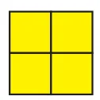
3.

4.
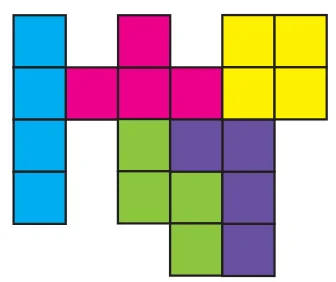
5.
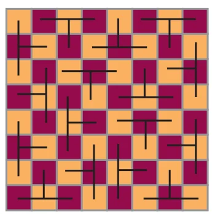
(more possible ways)
6.
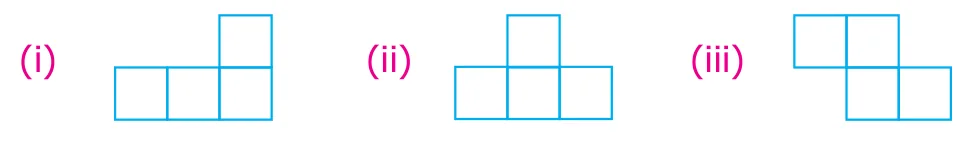
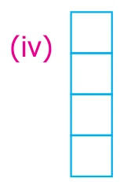
7.
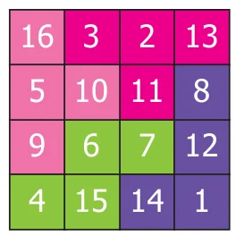
(more possible ways)
Exercise 6.2
1.
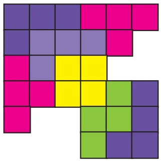
2.
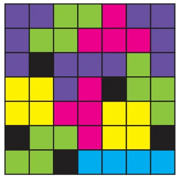
(more possible ways)
3.
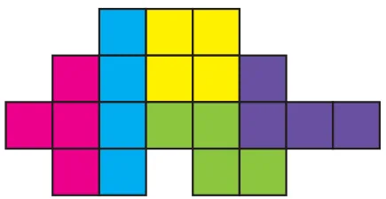
4.
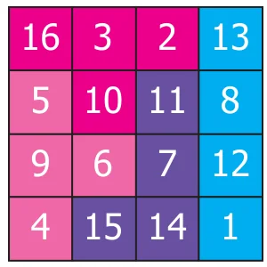
(more possible ways)
5. Mandapam \(\to\) Krusadai Island \(\to\) Vivekanandar Memorial Hall
Challenge Problems
6.
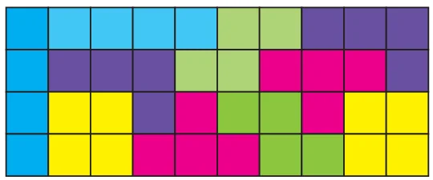
(more possible ways)
7.

(more possible ways)
8. (i)
route1 \(\ A \to G \to D\)
route2 \(\ A \to B \to D\)
route3 \(\ A \to B \to C \to D\)
route4 \(\ A \to G \to F \to E \to D\)
(ii) 320 m
(iii)
route1 \(\ B \to A \to G \to F\)
\(250 + 100 + 150 = 600\,m\)
route2 \(\ B \to D \to E \to F\)
\(100 + 120 + 300 = 520\,m\)
route3 \(\ B \to D \to G \to F\)
\(100 + 200 + 150 = 450\,m\)
route4 \(\ B \to C \to D \to E \to F\)
\(120 + 200 + 120 + 300 = 740\,m\)
Route 3 is the shortest route.

Standard Seven – Term - I, Volume - 2, Mathematics
Text Book Development Team
Reviewer
• Dr. R. Ramanujam, Professor, Institute of Mathematical Sciences, Taramani, Chennai.
Domain Expert
• Dr. C. Annal Deva Priyadarshini, Asst. Professor, Department of Mathematics, Madras Christian College, Chennai
Academic Coordinator
• B.Tamilselvi, Deputy Director, SCERT, Chennai .
Group in Charge
• Dr. V. Ramaprabha, Senior Lecturer, DIET, Tirur, Tiruvallur Dt.
Coordinator
• D. Joshua Edison, Lecturer, DIET, Kaliyampoondi, Kanchipuram Dt.
Content Writers
• G.P. Senthilkumar, B.T.Asst, GHS, Eraivankadu, Vellore District.
• M.J. Shanthi, B.T.Asst, PUMS, Kannankurichi, Salem Dt.
• M. Palaniyappan, B.T.Asst, Sathappa GHSS, Nerkuppai, Sivagangai Dt.
• A.K.T. Santhamoorthy, B.T.Asst, GHSS, Kolakkudi, Tiruvannamalai Dt.
• P. Malarvizhi, B.T.Asst, Chennai High School, Pattalam, Chennai
• M. Selvi, B.T.Asst, J.G.G.GHSS, Thiruvottiyur, Chennai.
Content Readers
• Dr.P.Jeyaraman, Asst Professor, L.N. Govt Arts College, Ponneri – 601 204
• Dr. K. Kavitha, Asst Professor, Bharathi Women's college, Chennai
Content Reader's Coordinator
• S. Vijayalakshmi, B.T. Asst., GHSS, Koovathur, Kanchipuram Dt.
ICT Coordinator
• D. Vasuraj, PGT & HOD, Dept. of Maths, KRM Public School, Chennai.
Qr Code Management Team
• J.F. Paul Edwin Roy, B.T. Asst, PUMS -Rakkipatty, Veerapandi, Salem.
• S. Albert Valavan Babu, B.T. Asst, GHS, Perumal Kovil, Paramakudi, Ramanathapuram
• M. SARAVANAN, B.T. Asst, GGHSS, Puthupalayam, Vazhapadi, Salem.
Art and Design Team
Layout Artist
• Joy Graphics, Chintadripet, Chennai - 02
• Raj Graphics, Theni Dist.
Typist
• R. Yogamalini,
Artist
• Prabu Raj D.T.M, GHS, Manimangalam, Kanchipuram Dt.
In-House QC
• Prasanth C
• Arun Kamaraj P
• Jerald Wilson
• Stephen
This book has been printed on 80 GSM Elegant Maplitho paper
Printed by offset at :